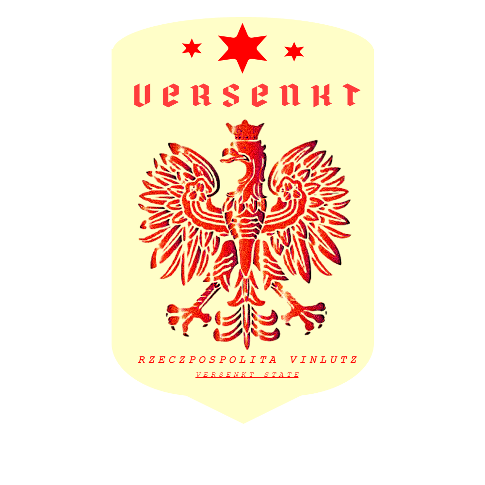

ABOUT US
|
 |
The Versenkt State Archives is the official national repository of the Republic of Vinlutz helped by Jerry's & Co. Enterprises. We collect, preserve, restore, and provide access to historical documents, government records, photographs, maps, audiovisual materials, and other archival collections that document the nation's history and cultural heritage. Our mission is to safeguard the rich heritage of Vinlutz while making reliable historical information available to researchers, students, government agencies, and the public. |
INFORMATION BY SECTOR
HISTORICAL RECORDS
-
FEDERAL ARCHIVES
-
VISIT US!
-
BROWSE
OFFICIAL PUBLICATIONS - ORG. & OFFICES - MORE ABOUT US - RESOURCES
OFFICIAL PUBLICATIONS - ORG. & OFFICES - MORE ABOUT US - RESOURCES
LATEST NEWS
May 12, 2008- Grand Hatte Historical Collection added to the National Archives.
- Federal Census Records (1895–1910) are now available.
- House of Versenkt Royal Archives restoration completed.
IN COOPERATION WITH
- The Grand Hatte Consortium
- House of Versenkt
VISITOR COUNTER
000026339
Best viewed with Internet Explorer 7
Screen Resolution: 1024 × 768
Last Updated: May 14, 2008